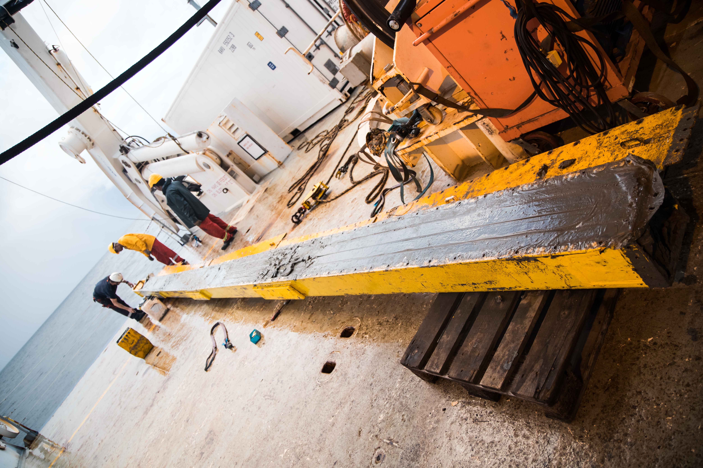
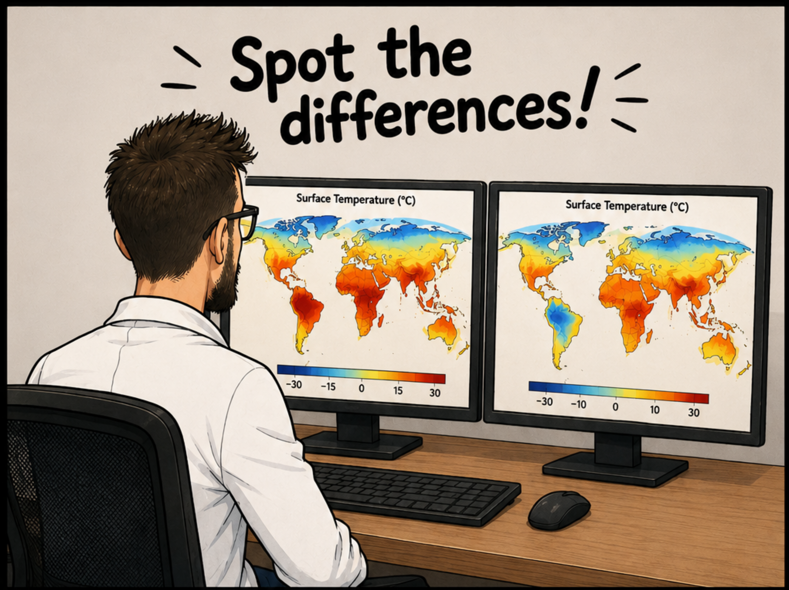
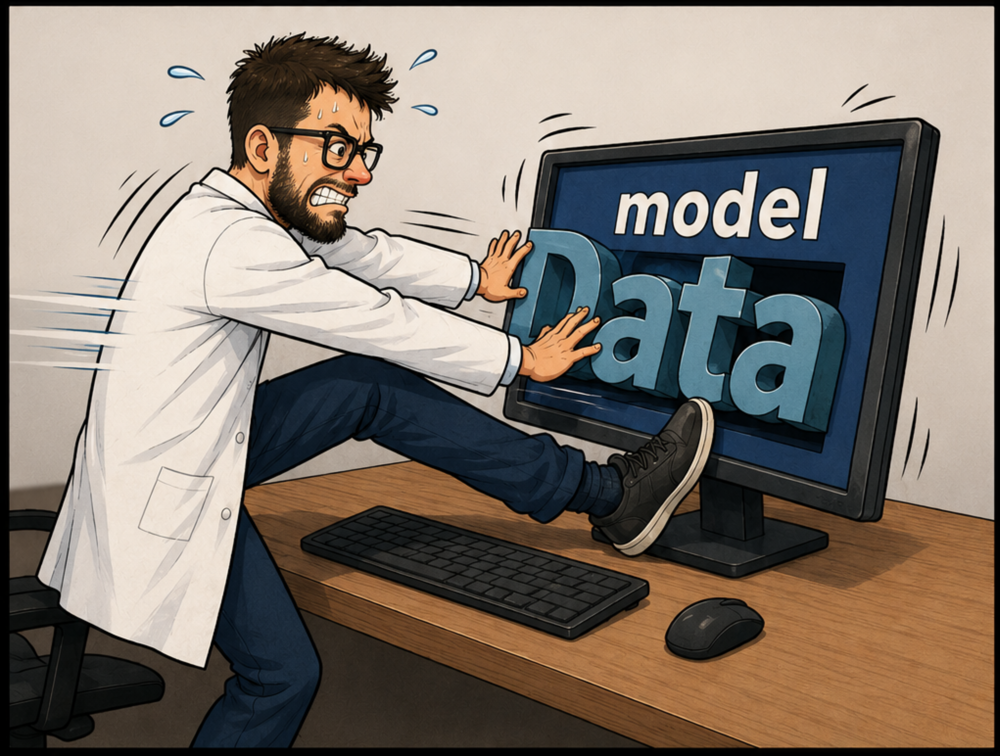
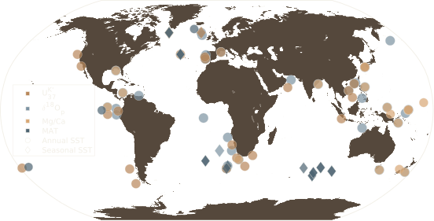
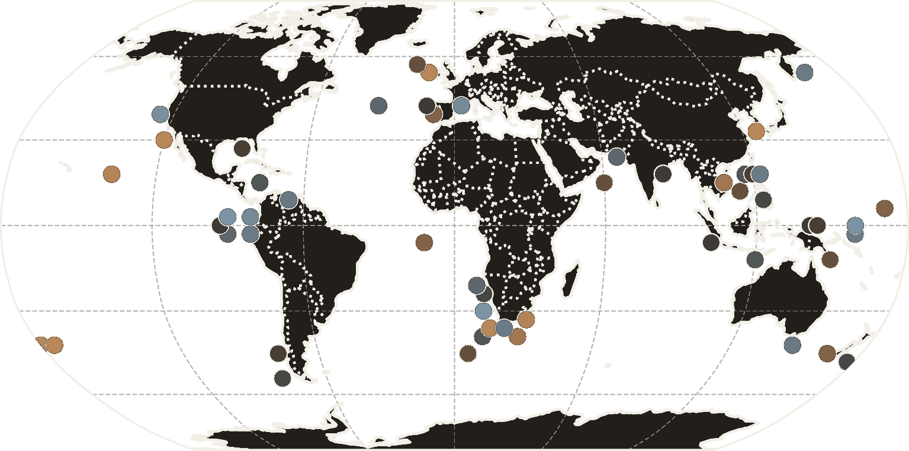
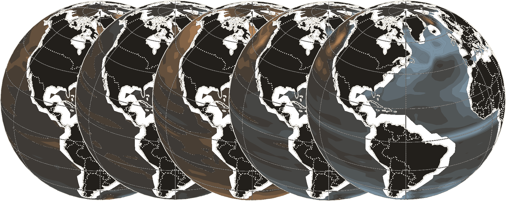
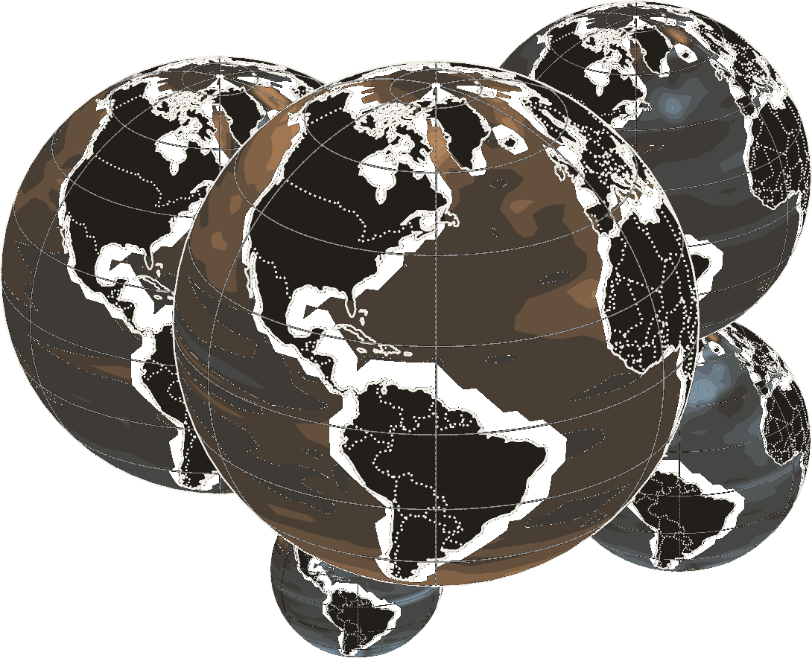
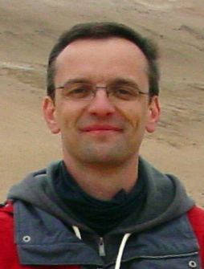

© Anaïs Duhayon — mission AMARYLLIS-AMAGASOCARINA relie les données et les modèles pour reconstruire l'océan profond du passé.
En intégrant des reconstructions haute résolution de température de surface et de ventilation des eaux profondes dans le modèle climatique LOVECLIM par assimilation de données, le projet livre la première simulation, contrainte par des reconstructions, de la circulation méridienne de retournement atlantique (AMOC) durant les interglaciaires chauds MIS 7e et 9e.
Contexte
800 000 ans de climat, deux fenêtres d'étude, un présent déjà hors norme.
Les MIS 7e et MIS 9e comptent parmi les périodes les plus chaudes des derniers 800 000 ans, portées par des forçages distincts, orbital pour l'une, CO2 pour l'autre. Elles offrent des analogues naturels pour comprendre la sensibilité de l'AMOC, alors que le CO2 actuel dépasse déjà tout ce que ces interglaciaires ont connu.
- 800 000 ans
- de couverture climatique
- MIS 7e & 9e
- fenêtres d'étude
- 1ère réanalyse
- avantage des reconstructions et modèlisations
Courbe de CO2 atmosphérique reconstruit à partir de carottes de glace, échelle d'âge AICC2012. Source : Bereiter et al. (2015).
MSCA Postdoctoral Fellowship 2025
OCARINA Ocean Circulation AcRoss Interglacials and deglacIatioNs through a reAnalysis framework
Ce projet a été lauréat de l'appel MSCA Postdoctoral Fellowships 2025 de l'Union européenne, et est hébergé à l'Earth and Life Institute de l'UCLouvain.

OCARINA innove en couplant pour la première fois les données de température de surface de l'eau (SST) et les traceurs de ventilation des eaux profondes (δ13C) au sein d'un même cadre d'assimilation. Contrairement aux approches 'hors ligne' couramment utilisées en paléoclimatologie, l'assimilation 'en ligne' met à jour le modèle en cours de simulation. Cela garantit un ajustement (en surface comme en profondeur) de la simulation à pas de temps réguliers, permettant de garder la physique du modèle pendant l'assimilation.
Objectif 1
Évaluer le modèle, avec et sans assimilation
Nous comparerons les simulations LOVECLIM avec et sans assimilation en ligne, pour établir un point de référence et mesurer précisément ce que l'assimilation apporte à la représentation de la circulation profonde.

Illustration générée par IA (OpenAI)
Illustration générée par IA (OpenAI)Objectif 2
Produire la première réanalyse en ligne d'un interglaciaire
En intégrant en temps réel les données de SST et de δ13C dans le modèle, OCARINA construit la première reconstruction dynamiquement cohérente de la circulation océanique profonde pour le MIS 7e ou MIS 9e et leur déglaciation associée.
Objectif 3
Identifier les mécanismes physiques des variations de l'AMOC
À partir de la réanalyse, nous cherchons à isoler les mécanismes responsables des grands changements de circulation, comme le retrait de la banquise, les gradients de densité, le régimes de vents. Cela permettra de mieux comprendre leur sensibilité aux forçages radiatifs naturels et de mieux anticiper son évolution future.
 Illustration générée par IA (OpenAI)
Illustration générée par IA (OpenAI)
Les données
Deux synthèses inédites, déjà publiées
OCARINA s'appuie sur deux synthèses de température de surface de l'océan (SST) que j'ai réalisées durant mon précédent postdoctorat, couvrant le MIS 9 (Stevenard et al., 2025) et le MIS 7 (Legrain et al., 2026). Les enregistrements ont été harmonisés sur la chronologie de précision basée sur les travaux de carottes de glace Antarctique (AICC2023), recalibrés selon une approche bayésienne ou Monte Carlo commune à chaque proxy, et exprimés en anomalies de température par rapport à la période pré-industrielle (ici, 1870-1899 CE). Les données de δ13C, qui documentent la ventilation des eaux profondes, ne sont pas encore publiées mais seront compilées aux mêmes sites que les SST, avec toutefois une couverture plus restreinte.
Points forts
- Mesures directes (« vérité terrain »)
- Reconstructions fiables une fois recalibrés
- Incertitudes bien quantifiées
Limites
- Couverture géographique inégale et localisée
- Résolution temporelle parfois limitée
- Certaines mesures issues de campagnes de laboratoire anciennes et hétérogènes

Localisation des enregistrements de la synthèse MIS 9. Figure adaptée de Stevenard et al. (2025), Climate of the Past.
Le modèle
LOVECLIM : modèle de complexité intermédiaire
OCARINA s'appuie sur LOVECLIM, un modèle climatique de complexité intermédiaire (EMIC). Sa rapidité (environ 250 années simulées par jour sur un seul processeur) rend possible ce qu'aucun modèle complet ne permet à ce coût : faire tourner de larges ensembles de simulations sur des échelles de temps multi-millénaires, tout en conservant les rétroactions climatiques essentielles entre océan, atmosphère et glace de mer.
Points forts
- Simulations rapides (~250 ans simulés/jour)
- Permet de grands ensembles sur des échelles multi-millénaires
- Conserve les rétroactions océan-atmosphère-glace essentielles
Limites
- Résolution et physique plus grossières qu'un modèle complet
- Certains processus fins (tourbillons, échelle régionale) ne sont pas résolus
- Résultats parfois différents des reconstructions
L'assimilation
Le meilleur des deux mondes
Un filtre particulaire fait tourner plusieurs dizaines de simulations en parallèle appelées « particules », qui représentent chacune une trajectoire possible du climat. À intervalles réguliers, chaque particule est comparée aux données réelles disponibles (SST, δ13C) : celles qui s'en approchent le plus voient leur poids augmenter, les autres sont progressivement éliminées et remplacées. Se concentrer sur un seul modèle plutôt que plusieurs permet justement de produire facilement ces grands ensembles en ligne, condition indispensable au filtre particulaire. Résultat : une reconstruction qui a la couverture globale et la cohérence physique d'un modèle, mais contrainte à chaque étape par la réalité des reconstructions.



Suivez le déroulé du projet au fil de l'eau sur la page Actualités !
Encadrement du projet
Nathan Stevenard
Porteur du projet — MSCA Postdoctoral Fellow
Nathan Stevenard est chercheur postdoctoral à l'UCLouvain et porte le projet OCARINA. Spécialiste de la reconstruction de la circulation océanique passée à partir de carottes sédimentaires, il a mené des recherches en paléocéanographie en France et en Belgique, combinant mesures de terrain, compilations de données et modélisation climatique.
Site personnel →Hugues Goosse
Superviseur principal — ELIC, UCLouvain
Hugues Goosse fait partie de l'équipe Earth and Climate (ELIC) à l'UCLouvain et co-encadre OCARINA. Figure reconnue de l'assimilation de données en paléoclimatologie, il a co-développé les modèles LOVECLIM et NEMO et contribué à plusieurs groupes de travail, notamment PMIP, PAGES ou le GIEC. Auteur de plus de 230 articles scientifiques, il a encadré une cinquantaine d'étudiants en master et une trentaine de doctorants et post-doctorants.
Site personnel →
Collaborateurs externes
-
Qiuzhen Yin
UCLouvain, Belgique
Modélisation des interglaciaires et dynamique océanique avec LOVECLIM
-
Claire Waelbroeck
CNRS, LOCEAN, France
Dynamique océanique et assimilation de données avec des modèles de complexité intermédiaire
-
Emilie Capron
CNRS, IGE, France
Harmonisation des proxys paléoclimatiques et reconstructions des interglaciaires
-
Laurie Menviel
UNSW, Australie
Circulation océanique, paléoclimat et modélisation isotopique
Publications
Les publications du projet arrivent bientôt
Le projet démarre prochainement : les publications associées au projet OCARINA seront ajoutées ici au fur et à mesure. En attendant, mes travaux antérieurs sont disponibles sur Google Scholar et ORCID.
Actualités
Le fil du projet
Les avancées scientifiques, rencontres et interventions publiques sont ajoutées au fil de l'eau.